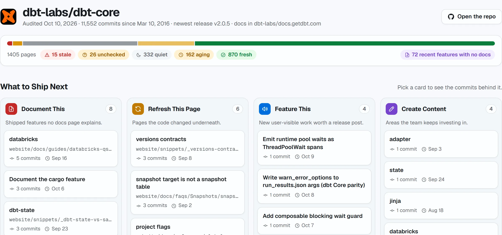
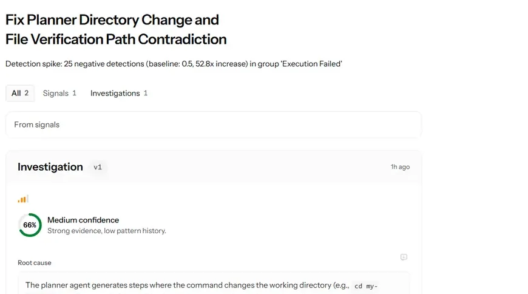
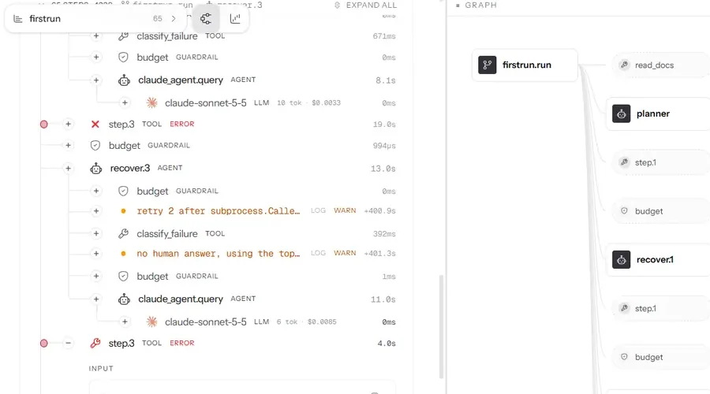
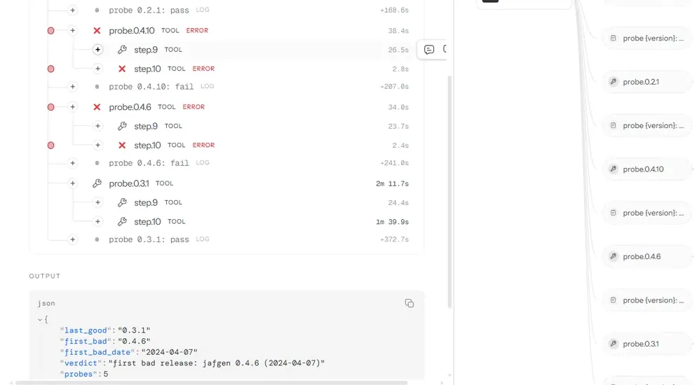
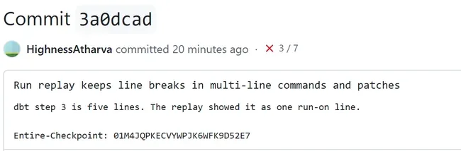
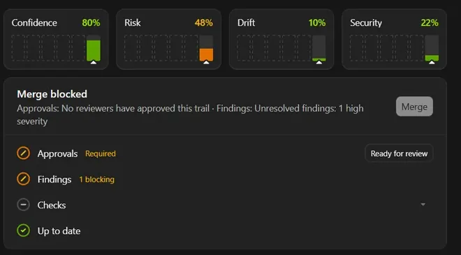
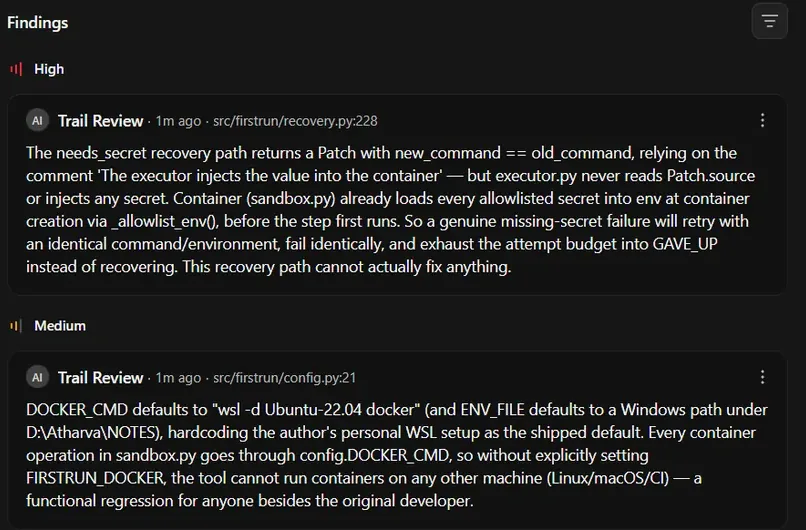
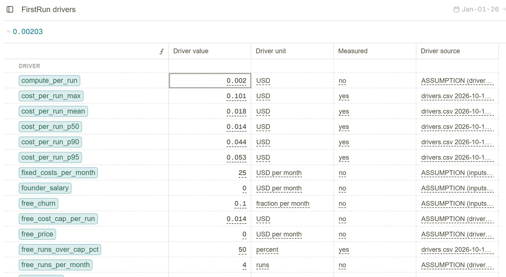
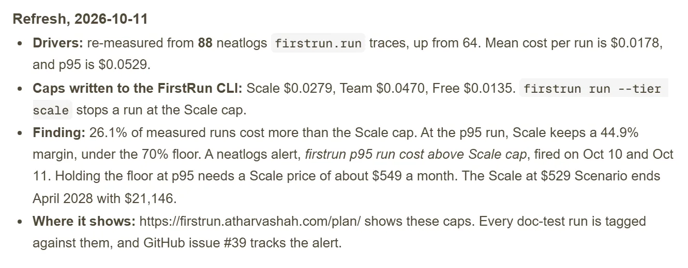

The film · 2:54
FirstRun Finds, Fixes and Proves Broken Docs
A real run and its receipt, a real audit, the agent path, and how neatlogs, Entire and cfo.ai shaped the build.
For teams that own a docs quickstart. FirstRun runs every command, not only the links, and proves each fix in a fresh container.
Runs your quickstart in a clean container, fixes the step that breaks, and proves it in a second run.
You get
$ jafgen --years 6No such option: --yearsFixed: jafgen 69 of 9 steps passedReads the whole repo's git history, code and docs. Lists stale pages, shipped features with no docs, and who works on which part of the code.
You get
project-flags.mdlast edit 453 days ago29 code changes since15 stale pages72 features with no docsProven in a clean container
dbt guide: 3 steps fixed, 9 of 9 pass
Two were docs bugs: jafgen --years 6 at step 10, and a guide that never says it needs Python 3.12. Step 1 only needed git. The rerun made no model calls.
Priced before you scale
$5.35 a month for 300 runs, projected
Basis: 300 runs at $0.0178, the mean model cost of 88 real runs, at list price. The Team plan caps a run at $0.047.
See a sample receiptAssigned to who knows the code
How Doc-test works. Broken steps go in. Real ones FirstRun found: jafgen --years 6 failed with No such option in the dbt guide. entire: command not found after the Entire install. A migration guide link that returns 404. A dbt guide that never states it needs Python 3.12. No module named typer. curl: command not found. AccuKnox docs that say 0.9.0 while the installer fetches 0.9.58. KeyError NEATLOGS_API_KEY.
How Doc-audit works, on dbt-labs/dbt-core. The project flags page was last edited 453 days ago, with 29 code changes since. The infer-configs page is 709 days old. 15 of 1,405 pages are stale. 72 shipped features have no docs. AccuKnox/help has 87 stale pages, and its oldest page is 1,100 days old.
Atharva ShahBuilt for neatHack, the neatlogs hackathonWatch on YouTube
Doc-test
docs.getdbt.com/guides/duckdbdbt docs serve below.Every step runs on your machine. Only the docs page and the output of a failed step go to the model. Read the known limits
1A step breaks
2FirstRun fixes the docs
3A second clean run proves it
10 steps, one command each
git clone https://github.com/dbt-labs/jaffle_shop_duckdb.gitThe container had no git, so FirstRun installs it first.Fixedcd jaffle_shop_duckdbPassedpip install -r requirements.txtA docs bug. The guide never says it needs Python 3.12, which networkx 3.7 needs. The fix pins 3.6.1.Fixeddbt seedPasseddbt buildPasseddbt docs generatePasseddbt docs serveIt starts a web server, which a headless container cannot check.Skippedls -lah *.duckdbPassedpython -m pip install jafgenPassedjafgen --years 6A docs bug. The tool now takes jafgen 6.FixedFresh container: 9 of 9 runnable steps passed, with no model calls.
A real run on the dbt + DuckDB quickstart. Replay this run
Doc-audit
 AltimateAI/altimate-code14 people, 619 commits in 12 months
AltimateAI/altimate-code14 people, 619 commits in 12 months
People
Code · share of each part
Built from public commits in the last 12 months. Suggestions, not assignments.
Doc-audit
1Paste a repo
2FirstRun reads the history
3You get the list

Receipt
The film · 2:54
A real run and its receipt, a real audit, the agent path, and how neatlogs, Entire and cfo.ai shaped the build.
Doc-test · 2:59
Doc-audit · 1:56
A real audit of dbt-core: one repo in, a run on a laptop, the board, an owner for each fix, and the receipt.
Teaser · 0:36
Doc-audit · 0:57
neatlogs
neatlogs traces every run, so a failed step comes with its cause. On the same 4 quickstarts, agent v2 finished 3 where v1 finished 2, and the mean cost fell from $0.0262 to $0.0200. See v1 against v2

Investigate traced a 52.8x spike in failed steps to one root cause.
Read the neatlogs evidence
Every recovery is a span. In this Dagster run, step 3 failed twice and recover.3 retried it.
Read another recovered run in full
A Bisect trace tested 5 jafgen releases and found the first bad one, 0.4.6.
Read the finding on dbt PR #10149Entire
Entire records the session behind each commit and reviews code before it merges.

91 of 132 commits link to the Entire session that wrote them.
Open a commit's session on Entire
Trail 3 blocked the merge while 1 high finding stayed open.
Read the Entire evidence
Trail reviews caught 3 real bugs before merge, and each one was fixed.
See the fix commitcfo.ai
Ari, the cfo.ai agent, built the 18-month model that sets each plan's cost cap.
Under the old $0.50 cap, the model runs out of cash in month 14.
Open the public cfo.ai model
Its cost per run comes from 88 neatlogs traces, and each row names its source.
See drivers.csv
The plan caps a Scale run at $0.0279 and a Team run at $0.0470.
See how each cap is setFirstRun does one job: it runs the quickstart, fixes the docs, proves the fix and opens the PR. A link checker or a docs linter only reads the page.
| Feature | FirstRun | Claude Code | GitHub Actions | GitHub Agents | Custom workflow |
|---|---|---|---|---|---|
| Runs the quickstart as a new developer | Every step runs in a fresh Docker container | Runs on your machine. An optional sandbox limits files and network | A fresh runner per job, but you script every step | Works in its own VM on your repo, not a new-user setup | Only as clean as the environment you build |
| Plans steps from a docs URL | Writes one step per command on the page | When you prompt it with the page | You write each step | Starts from an issue or task, not a docs page | You write the parser |
| Tries again when a step fails | Finds the cause, patches, retries up to 3 times per step | Iterates inside one session | The job fails and stops | Iterates and pushes commits to its draft PR | Only what you code |
| Proves the fix | A second clean container must pass the whole quickstart | Only if you ask for it | Only if you script a second run | Your repo's own tests, not a clean-user rerun | Only if you code it |
| Shows the cost of each run | neatlogs traces every run. The mean run costs $0.018 | Cost and token metrics, after you set them up | Logs and run history, no agent traces | A session log, with no cost trace you own | You build it |
| Opens the docs PR | After you approve once | When you ask | Only if you script it | Opens a draft PR and asks you for review | Only if you code it |
| Easy to start | Paste a docs URL, then paste the prompt into your coding agent | One prompt, but you define the test and the clean setup | A YAML file per quickstart | Assign an issue to Copilot | Highest effort |
| Proof in public repos | 4 upstream docs PRs, all open | Not specific to docs | Not specific to docs | Not specific to docs | Depends on your build |
my neatlogs hackathon project has already caught doc issues for a chroma (24K+ github stars). chromadb's deprecated-config error sends you to its own migration guide. that page returns 404.
Read the post on X
built this weekend at #neatHack, the AI agent hackathon by @neatlogs. stack: @EntireHQ records every coding session, @arithecfo builds the business plan.
Read the post on X
#neatHack kickoff, 12:30 IST. FirstRun code before kickoff: 0 lines. neatlogs doctor probe: 7/7 PASS. Solo build. Submission opens Monday, 7 PM IST.
Read the post on X
#neatHack, day one. all three required tools are up. Entire: trail #1 created. neatlogs: first agent trace, 3 steps, 12s. cfo.ai: Ari read my public profile.
Read the post on X
your quickstart is the only part of your product tested by people who leave instead of filing a bug. so for #neatHack i'm building FirstRun. break. fix. prove.
Watch the video on X
a quickstart breaks the way an agent breaks. quietly. so the plan for this weekend: every FirstRun run becomes a trace in @neatlogs.
Read the post on X
send me your quickstart and FirstRun runs it in a clean container before monday, 7 PM IST. reply with the name of a public quickstart page.
Read the post on X
4 docs PRs opened on day one of #neatHack, from an agent that runs a quickstart the way a new developer would. dbt-labs: 2, entireio/cli: 1, accuknox/help: 1.
Read the post on X
an agent that heals every failure on its own drifts toward its own guess of how your product works. FirstRun hits that call on every red step. #neatHack
Read the post on X
a maintainer who gets a PR from an agent asks one question. why should i trust this change? the session behind the diff answers it.
Read the post on X
FirstRun had no web UI at kickoff. that was the bet. by 3 PM on saturday it had one.
Read the post on X
Atharva is a DevRel engineer. He owns developer docs at AccuKnox and works with Altimate AI. He built FirstRun alone, in public.